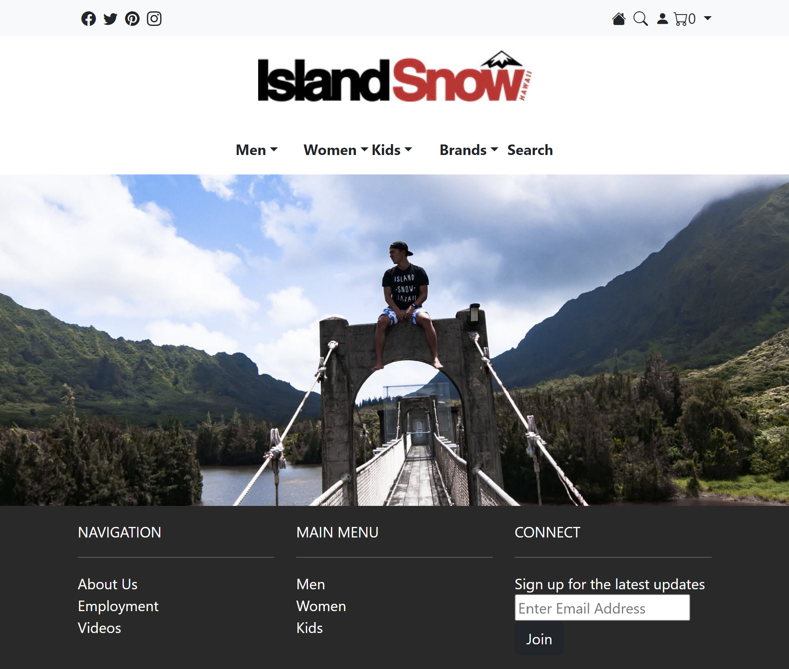

User Interface (UI) frameworks are intended to streamline web design by providing pre-designed components. However, it can be a daunting process to learn new UI frameworks, comparable to learning a new programming language. This raises the question: Is it worth the time investment to learn a new UI framework? Furthermore, why not solely use raw HTML and CSS?
In my experience working with raw HTML and CSS is quite tedious. Creating each element in the page completely from scratch requires a lot of planning and tinkering. When designing a page, I often have a general idea of what an element should look like without knowing the details like alignment, padding, margins, etc.. As a result, the development process required many iterations for the element to begin to resemble my goal.
I found that using the Bootstrap 5 framework allowed me to streamline the process. Its library of pre-designed components and grid system eliminated much of the trial and error. With Bootstrap 5, I can quickly implement a basic navigation bar, and most of the time, I only need to make small tweaks. This saves a substantial amount of time and allows me to focus more on the unique parts of a web page.

A webpage mockup created with bootstrap
However, I often find myself searching through Bootstrap’s documentation, especially when I need to fine-tune specific aspects of my design. While Bootstrap 5 undeniably expedited the development process, it can be difficult to remember if a specific design choice can be achieved with a Bootstrap class or if it would be more efficient to use a custom CSS. Bridging the gap between the predefined and personalized aspects of web design is a challenging part of the learning process with Bootstrap.
Despite this, learning Bootstrap 5 has been a valuable investment. I’ve gained the ability to rapidly prototype and build UI. It has allowed me to focus on the more unique and creative aspects of web development, rather than getting bogged down in repetitive, pure HTML and CSS coding. In conclusion, while learning a UI framework like Bootstrap 5 may present a steep learning curve, its benefits justify the time investment.